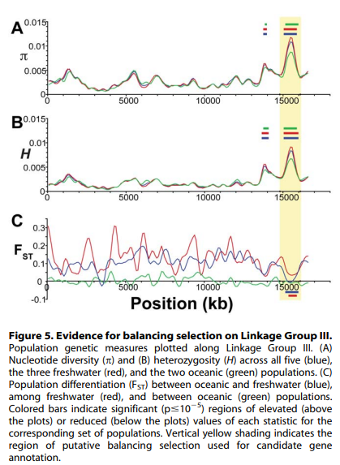

Fundamentals of Evolution
EEEB G6110
Session 11: The Coalescent
Today's topics
1. Recap (Fst, Wright-Fisher)
2. The coalescent
3. Coalescent simulations
4. Forward simulations
5. Readings
Wright's F-statistics
Measure an inbreeding coefficient (deviation of H from expected). Applied at different hierarchical grouping of alleles (e.g., individuals, subpopulations) these statistics can measure population structure.
The prob. two randomly sampled alleles are the same in an individual (compared to in a subpop or total), or that they are the same in one subpop (compared to the combination of two subpops).


Wright's F-statistics
$F_{ST}$ can be interpreted as a measure of population differentiation. If $F_{ST}$ between two populations is 1 then they are fixed for different alleles (no variation is segregating in both populations).
Wright's F-statistics ($F_{ST}$)
Although $F_{ST}$ is formally describe as partitioning variance relative to the total population, in practice we are often interested in pairwise $F_{ST}$ as a measure of differentiation between two populations. This is simply done by re-defining what we mean by the total population.
$F_{ST}$ Readings (review paper)
$F_{ST}$ can be defined and measured in several ways. The measure itself is informative, and it also can set a benchmark against which to test hypotheses about selection or introgressive gene flow.
“Genetics in Geographically Structured Populations: Defining, Estimating and Interpreting FST.”
$F_{ST}$ Readings (empirical papers)
What is so interesting about the Heliconius butterfly radiation?
Do Heliconius populations form good taxa (identifiable by geography + morphology)?
What types of $F_{ST}$ patterns do the authors observe? And what do they conclude from these?
“Genome-Wide Patterns of Divergence and Gene Flow across a Butterfly Radiation.”
$F_{ST}$ Readings (empirical papers)
There are many examples of phenotypic convergence in Heliconius between closely related and distantly related species and populations.
Here the authors focus on H. cyndo and H. melpomene which co-occur broadly, rarely hybridize, but may have experienced adaptive introgression.
To what extent do color patterns reflect independent evolution versus retention of ancestral alleles, versus introgressed exchange of alleles? Genome-wide $F_{ST}$ can shed some light.
“Genome-Wide Patterns of Divergence and Gene Flow across a Butterfly Radiation.”
$F_{ST}$ Readings (empirical papers)
Genome-wide pairwise $F_{ST}$. Populations showed increasing divergence with increasing geographic distance, as well as increases with taxonomic distance (Fig. 3). In addition, correlation between all pop distances with geography (mantel P=0.003).

“Genome-Wide Patterns of Divergence and Gene Flow across a Butterfly Radiation.”
$F_{ST}$ Readings (empirical papers)
per-locus pairwise $F_{ST}$. Sympatric species pairs show correlated regions of high FST.
“Genome-Wide Patterns of Divergence and Gene Flow across a Butterfly Radiation.”
$F_{ST}$ Readings (empirical papers)
Association with geography, taxon, and color pattern. Analysis of Molecular Variance.
“Genome-Wide Patterns of Divergence and Gene Flow across a Butterfly Radiation.”
$F_{ST}$ Readings (empirical papers)
Association with geography, taxon, and color pattern. Analysis of Molecular Variance.
“Genome-Wide Patterns of Divergence and Gene Flow across a Butterfly Radiation.”
$F_{ST}$ Readings (empirical papers)
"If the loci most strongly associated with 'taxon' are those under divergent selection, these should also be loci with high FST in sympatric mel v. cydo/tim pairs. ... The 21 loci that are FST outliers do appear as outliers in AMOVA."
"Convergent wing color patterning may be controlled by loci that are introgressed between taxa. Fourteen loci were found to be more strongly associated with color pattern than taxon or geography (Fig. 4B). Two of these are known to be associated with wing color."
“Genome-Wide Patterns of Divergence and Gene Flow across a Butterfly Radiation.”
$F_{ST}$ Readings (empirical papers)
$F_{ST}$ Readings (empirical papers)
What is so interesting about threespine Sticklebacks?
What are the relationships of sampled populations in this study?
What types of $F_{ST}$ patterns do the authors observe? And what do they conclude from these?
Population Genomics of Parallel Adaptation in Threespine Stickleback using Sequenced RAD Tags
$F_{ST}$ Readings (empirical papers)
There are many examples of phenotypic convergence in sticklebacks that have adapted recently to freshwater lakes from marine environment.
Genetic diversity and differentiation statistics support the repeated colonization of small freshwater pops from a large marine population.
FST scans reveal evidence of balancing and divergent selection, often in parallel but not always among freshwater pops.
Population Genomics of Parallel Adaptation in Threespine Stickleback using Sequenced RAD Tags
$F_{ST}$ Readings (empirical papers)
Marine populations have little differentiation even over large geographic distance, while marine/fresh or fresh/fresh FST shows much larger differentiation.
Population Genomics of Parallel Adaptation in Threespine Stickleback using Sequenced RAD Tags
$F_{ST}$ Readings (empirical papers)
Genetic diversity and heterozygosity vary considerably across the genome.
Population Genomics of Parallel Adaptation in Threespine Stickleback using Sequenced RAD Tags
$F_{ST}$ Readings (empirical papers)
Population Genomics of Parallel Adaptation in Threespine Stickleback using Sequenced RAD Tags
$F_{ST}$ Readings (empirical papers)

Population Genomics of Parallel Adaptation in Threespine Stickleback using Sequenced RAD Tags
$F_{ST}$ Readings (empirical papers)
Despite the phenotypic divergence of freshwater pops, a huge amount of genetic variation is still shared among all populations (no windows reach FST=1).
The regions of highest differentiation are shared among most freshwater-marine comparisons, showing convergence at the genetic level. Similar regions responding to directional selection.
Private alleles are greater in marine than freshwater, supporting that fresh is a subset of marine. However, some high Fst (f/m) regions are associated with private alleles in freshwater. These are likely low freq alleles in marine that were unsamples but maintained by balancing selection or gene flow.
Population Genomics of Parallel Adaptation in Threespine Stickleback using Sequenced RAD Tags
Wright-Fisher Model
Each generation randomly sample alleles from the parental generation. By incorporating a finite population size (N) into our sampling probabilities we can estimate the expected change in allele frequencies due to drift.
A discrete time model in which each generation is composed of 2N copies of each gene. Each subsequent generation 2N new copies are randomly drawn from the previous generation. The probability of obtaining k copies the next generation is:
$$ {{2N \choose k}p^{k}(1-p)^{2N-k}} $$
https://en.wikipedia.org/wiki/Genetic_drift#Wright.E2.80.93Fisher_model
Wright-Fisher Model
A neutral evolutionary process (no selection) can be modeled using the WF model in which allele frequencies change over time by genetic drift.

Source: Alexei Drummond
Reading for next session
Read both of these:
Gene tree discordance, phylogenetic inference and the multispecies coalescent
Inferring the Joint Demographic History of Multiple Populations from Multidimensional SNP Frequency Data